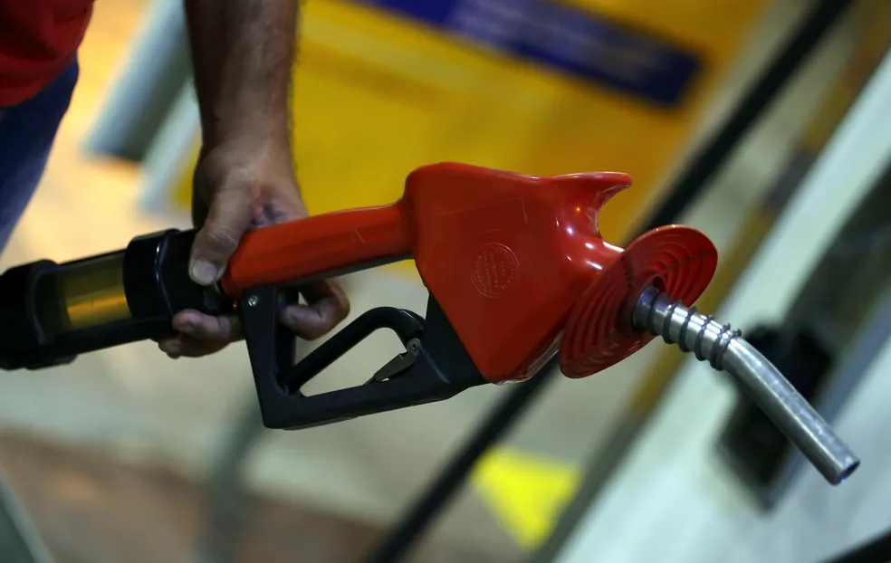
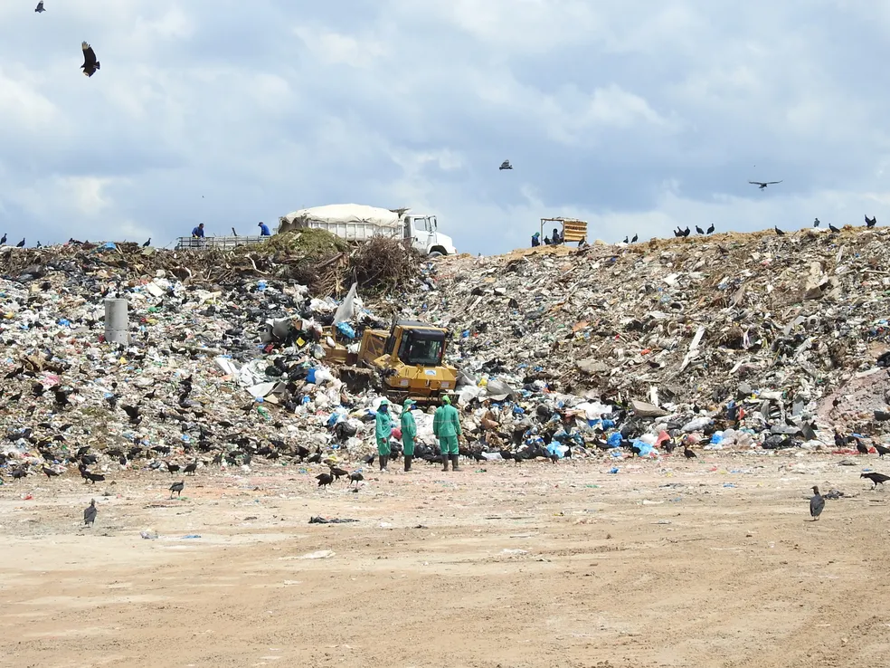

Últimas Notícias:
Petrobras anuncia aumento de preço da gasolina e do gás de cozinha
Gasolina terá uma alta de R$ 0,20 (ou 7,11%) para as distribuidoras, chegando a R$ 3,01. Gás de cozinha de 13kg subirá para R$ 34,70, ou 9,6%. O diesel não teve reajuste.
Mpox volta a ser uma emergência sanitária global, diz OMS

A 'varíola dos macacos', como era então chamada a doença, recebeu o mais alto nível de alerta da organização. Decisão ocorre pouco mais de um ano após a OMS anunciar que a mpox não era mais uma emergência de saúde internacional.
Brasil é o 4º maior produtor de lixo plástico do mundo e recicla apenas 1%
Estudo foi feito pelo Fundo Mundial para a Natureza (WWF) e divulgado nesta segunda (4). País produz 11 milhões de toneladas de lixo plástico por ano.